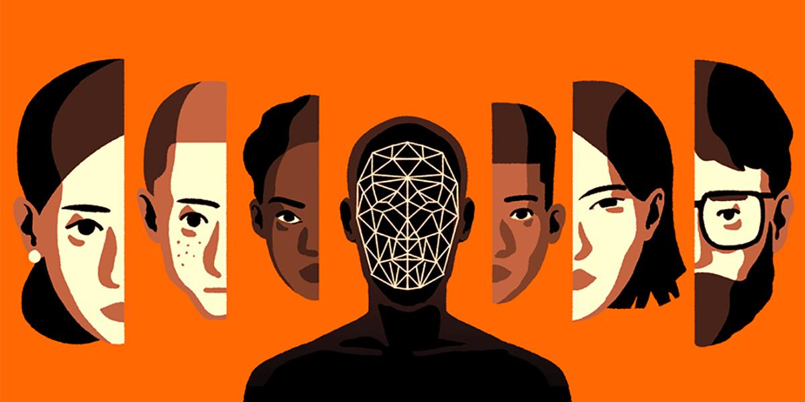

AI Bias
One of the problems in society that AI decision-making was meant to solve, was bias. However, with the increasingly larger dataset, the AI systems themselves can be biased due to reasons such as the improper training on data evaluation. As artificial intelligence moves out of the data science labs and into the real world. Biased AI systems are likely to become an increasingly widespread problem. Vulnerable groups in society could be hurt or have their rights impinged by biased AI. For example, Joy Buolamwini at MIT working with Timnit Gebru found that facial analysis technologies had higher error rates for minorities and particularly minority women, potentially due to unrepresentative training data. While AI is bringing great benefits to human, such problems shouldn’t be underestimated.
What is AI bias?
Before discussing how AI bias may happen and the possible solutions, we should first draw a rough sketch of it.
Imagine you are a teacher. Datasets are like textbooks for your student to learn from. Then just like textbooks have human authors, datasets are also collected according to different instructions made by their “author”. What’s more, as it would not be surprising that students end up reflecting some of the skewed perceptions if you try to teach them from a textbook written by a prejudiced author, AI is also likely to contain bad patterns if it is shown with wrong datasets.
Above is just a vivid example to show why AI bias may exist and we would go much further to explain AI bias in greater details. It is noteworthy that datasets are not the only sources of the bias.
How AI bias happens
The bias mainly happens in the following four stages:
- Framing the problem: the model which translates some nebulous concepts into something that can be computed can be biased.
- Collecting the data: either the data you collect is unrepresentative of reality, or it reflects existing prejudices
- Preparing the data: involves selecting which attributes you want the algorithm to consider.
- Data generated by users can also create a feedback loop that leads to bias. For example, In Latanya Sweeney’s research on racial differences in online ad targeting, searches for African-American-identifying names tended to result in more ads featuring the word “arrest” than searches for white-identifying names. Sweeney hypothesized that even if different versions of the ad copy—versions with and without “arrest”—were initially displayed equally, users may have clicked on different versions more frequently for different searches, leading the algorithm to display them more often.
Challenges facing us：
- The introduction of bias isn’t always obvious during a model’s construction
- In practice, testing usually looks like this: computer scientists randomly split their data before training into one group that’s actually used for training and another that’s reserved for validation once training is done. That means the data you use to test the performance of your model has the same biases as the data you used to train it.
- The way in which computer scientists are taught to frame problems often isn’t compatible with the best way to think about social problems.
- It’s also not clear what the absence of bias should look like. We lack the definition of fairness. Different fairness definitions usually cannot be satisfied at the same time.
- As the size of the data getting bigger, our sample can only be a small part of it, which makes bias more likely to happen.
What to do:
- Understand and measure “fairness.”
- Process data beforehand, altering the system’s decisions afterwards, or incorporate fairness definitions into the training process itself.
- Focus on how humans and machines can work together to mitigate bias. Human judgment is still needed to ensure AI supported decision making is fair
Other articles to read on this topic:
- What Do We Do About The Biases In AI?
- Bias In AI: A Problem Recognized But Still Unresolved
- Tackiling Bias In Artificial Intelligence And In Humans
- 3 Steps To Tackle The Problem Of Bias In Artificial Intelligence